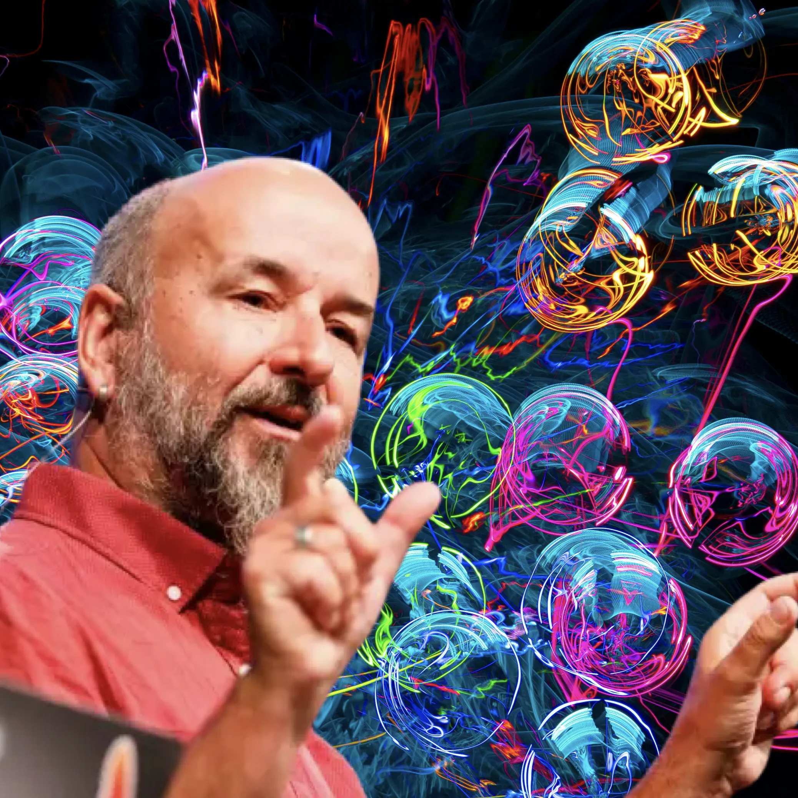

Prochaines dates
Avenches, Salle du Théatre, mardi 19 janvier 2027, 19h.
Ouverture des portes à 18h45.
Entrée libre, conférence suivie d'un apéritif.
Organisation: Club des Aînés et Commune d'Avenches.
La conférence
L’Intelligence artificielle bouleverse notre quotidien à un rythme inédit, bien plus rapide que la révolution Internet de la fin du XXe siècle.
Face aux discours souvent contradictoires sur les enjeux et les qualités de l’IA, mieux comprendre les fondamentaux de cette technologie va nous aider à trouver un chemin praticable.
Pour ce faire, cette conférence destinée au grand public vous emmène « sous le capot » des Grands Modèles de Langage (Large Language Models, LLM) et des services qui propulsent cette mutation. Loin du jargon technique, nous découvrirons leurs principes de base et leurs limites au travers d’exemples concrets.
Bertrand Delacrétaz
Bertrand a consacré plus de 40 ans au développement de logiciels, principalement dans le domaine du Web, travaillant notamment pour le Parlement Fédéral Suisse, la Radio Télévision Suisse et pour Adobe en tant que Principal Scientist. Membre du comité de direction de la fondation ASF (apache.org) pendant 14 ans, il est un acteur engagé du logiciel libre.
Il intervient depuis plus de 20 ans, dans des conférences internationales, notamment pour promouvoir une approche responsable et durable face aux mutations technologiques.